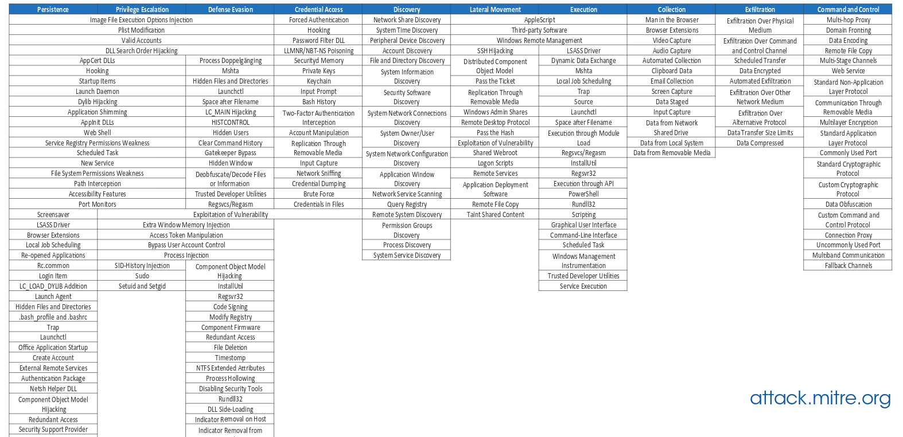

Track current APT TTPs:
-security research firms, fireeye
https://www2.fireeye.com/rs/848-DID-242/images/rpt-apt29-hammertoss.pdf
-MITRE attack matrix


-running list of APT Groups and Ops
https://docs.google.com/spreadsheets/d/1H9_xaxQHpWaa4O_Son4Gx0YOIzlcBWMsdvePFX68EKU/edit#gid=1864660085
-running list of APT techniques mapped onto mit-atak
https://github.com/redcanaryco/atomic-red-team/blob/master/atomics/windows-matrix.md